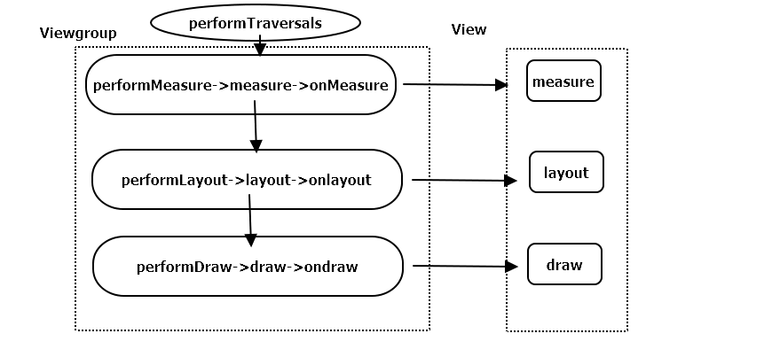
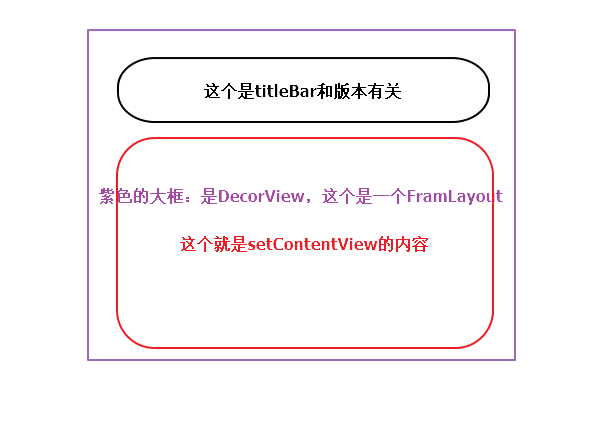
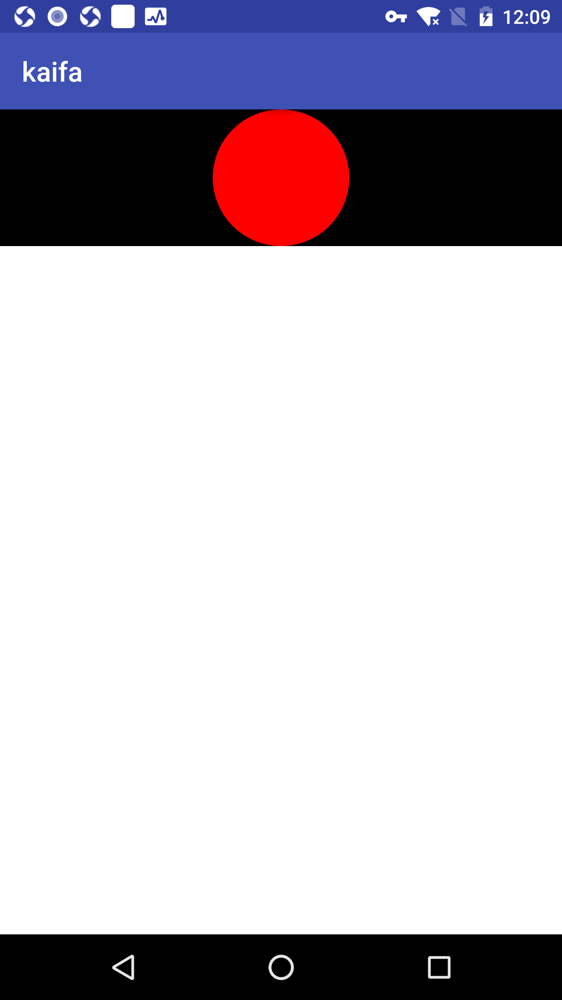
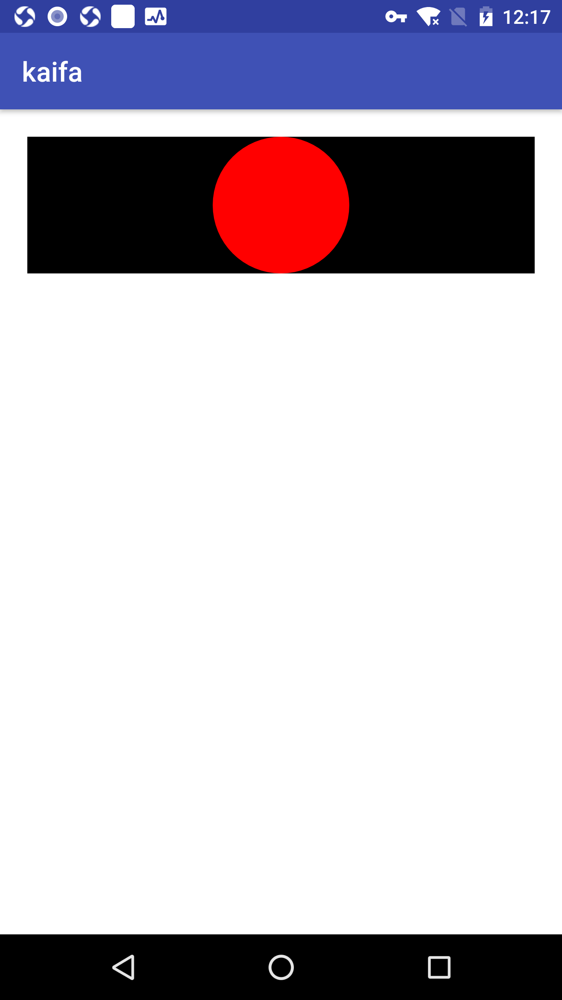
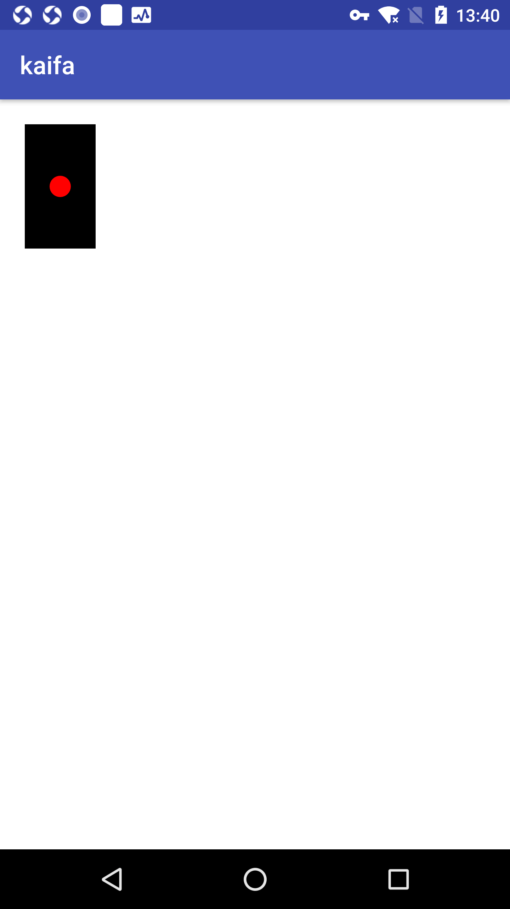
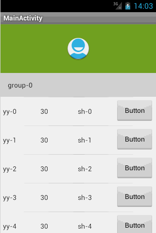

这一章主要介绍两个方面的内容，一个是View的工作原理，接着介绍自定义View的实现方式。
初识ViewRoot和DecorView
在介绍View之前，这里介绍一下基本概念，这样才能了解View的measure，layout，draw过程。
ViewRoot对应于ViewRootImpl类，它是连接WindowManager和DecorView的纽带，View的三大流程都是通过ViewRoot来完成的。在ActivityThread中，当Activity对象呗创建完成后，会将DecorView添加到window中，同时创建ViewRootImpl对象。并将ViewRootImpl对象和DecorView建立关联，这个过程可以看如下源码。
1
2root=new ViewRootImpl(view.getContext,display);
root.setView(view,wparams,panelParentView)
View的绘制流程从ViewRoot的performTraversals方法开始的，他经过measure，layout，draw三个过程才能最终将一个View绘制出来，其中measure用拉力测量View的宽和高，layout用来确定View在父容器当中的位置，而draw负责将View绘制到屏幕上面去。针对performTraversals的大致流程如下

如图所示，performTraversals会一次调用performMeasure，performLayout和performDraw三个方法，这三个方法分别完成顶级View的measure，layout，draw这三大流程。其中performMeasure会调用measure方法，在measure方法中会调用onMeasure方法，在onMeasure方法会对所有子元素进行measure过程，这个时候measure流程就从父容器传递到子容器当中了。这样就完成了一次measure过程。接着子元素会重复父容器的measure过程，如此反复就完成了整个View树的遍历，同理performLayout和performDraw的传递流程和performMeasure是类似的，唯一不同的是performDraw的传递过程是在draw方法加载dispatchDraw来实现的，不过本质并没有什么区别。
measure过程决定了View的宽和高，Measure完成后，可以通过getMeasuredWidth和getMeasureHeight方法来获取到View测量后的宽和高。在几乎所有的情况下他都等于View最终的宽和高，但是特殊情况除外，这点在本章后面会进行说明。Layout过程决定了View的四个顶点和View的实际宽和高，完成以后可以通过getTop和getBottom和getRight和getLeft并且通过getWidth和getHeight获取最终的宽和高，draw过程决定了View的显示。只有draw之后才能在屏幕上面显示。

如图：DecorView作为最顶级的View，一般情况下他的内部包含一个Linearlayout,分为两个部分：上方标题栏和下方内容栏。在Actvity中通过setContentView的内容是被加入到内容栏中间的，而内容栏的id是content，所以这个方法就叫做setContentView。如何得到这个内容栏呢? 可以通过findViewById(R.id.content)找到内容栏。如何得到我们设置的View呢?可以通过content.getChildAt(0)来获取
理解MeasureSpec
为了更好的理解View的测量流程，我们还需要理解MeasureSpec。从名字上来看 MeasureSpec像是测量规格。 MeasureSpec是干什么的呢？它在很大程度上决定了一个View的尺寸规格，之所以很大程度上是因为这个会受到父控件的影响，因为父控件影响View的MeasureSpec的创建过程。在测量过程中，系统会将View的LayoutParems根据父控件所施加的规则转换成对应的MeasureSpec，然后在更具这个measureSpec来测量View的宽高,上面提到过，这里测量的宽和高并不一定是View的最终宽高。MeasureSpec看起来有点复杂。其实他的实现很简单。
MeasureSpec
这个是一个32位的int值，高两位代表测量模式：specMode，低两位代表某一种模式的测量大小：SpecSize。1
2
3
4
5
6
7
8
9
10
11
12
13
14
15
16
17
18
19
20
21
22
23
24
25
26
27
28
29
30
31
32
33
34
35
36
37
38
39
40
41
42
43
44
45
46
47
48
49
50
51
52
53
54
55
56
57
58
59
60
61
62
63
64
65
66
67
68
69
70
71
72
73
74
75
76
77
78
79
80
81
82
83
84
85
86
87
88
89
90
91
92
93
94
95
96
97
98
99
100
101
102
103
104
105
106
107
108
109
110
111
112public static class MeasureSpec {
private static final int MODE_SHIFT = 30;
private static final int MODE_MASK = 0x3 << MODE_SHIFT;
/** @hide */
@IntDef({UNSPECIFIED, EXACTLY, AT_MOST})
@Retention(RetentionPolicy.SOURCE)
public @interface MeasureSpecMode {}
/**
* Measure specification mode: The parent has not imposed any constraint
* on the child. It can be whatever size it wants.
*/
public static final int UNSPECIFIED = 0 << MODE_SHIFT;
/**
* Measure specification mode: The parent has determined an exact size
* for the child. The child is going to be given those bounds regardless
* of how big it wants to be.
*/
public static final int EXACTLY = 1 << MODE_SHIFT;
/**
* Measure specification mode: The child can be as large as it wants up
* to the specified size.
*/
public static final int AT_MOST = 2 << MODE_SHIFT;
/**
* Creates a measure specification based on the supplied size and mode.
*
* The mode must always be one of the following:
* <ul>
* <li>{@link android.view.View.MeasureSpec#UNSPECIFIED}</li>
* <li>{@link android.view.View.MeasureSpec#EXACTLY}</li>
* <li>{@link android.view.View.MeasureSpec#AT_MOST}</li>
* </ul>
*
* <p><strong>Note:</strong> On API level 17 and lower, makeMeasureSpec's
* implementation was such that the order of arguments did not matter
* and overflow in either value could impact the resulting MeasureSpec.
* {@link android.widget.RelativeLayout} was affected by this bug.
* Apps targeting API levels greater than 17 will get the fixed, more strict
* behavior.</p>
*
* @param size the size of the measure specification
* @param mode the mode of the measure specification
* @return the measure specification based on size and mode
*/
public static int makeMeasureSpec(@IntRange(from = 0, to = (1 << MeasureSpec.MODE_SHIFT) - 1) int size,
@MeasureSpecMode int mode) {
if (sUseBrokenMakeMeasureSpec) {
return size + mode;
} else {
return (size & ~MODE_MASK) | (mode & MODE_MASK);
}
}
/**
* Like {@link #makeMeasureSpec(int, int)}, but any spec with a mode of UNSPECIFIED
* will automatically get a size of 0. Older apps expect this.
*
* @hide internal use only for compatibility with system widgets and older apps
*/
public static int makeSafeMeasureSpec(int size, int mode) {
if (sUseZeroUnspecifiedMeasureSpec && mode == UNSPECIFIED) {
return 0;
}
return makeMeasureSpec(size, mode);
}
/**
* Extracts the mode from the supplied measure specification.
*
* @param measureSpec the measure specification to extract the mode from
* @return {@link android.view.View.MeasureSpec#UNSPECIFIED},
* {@link android.view.View.MeasureSpec#AT_MOST} or
* {@link android.view.View.MeasureSpec#EXACTLY}
*/
@MeasureSpecMode
public static int getMode(int measureSpec) {
//noinspection ResourceType
return (measureSpec & MODE_MASK);
}
/**
* Extracts the size from the supplied measure specification.
*
* @param measureSpec the measure specification to extract the size from
* @return the size in pixels defined in the supplied measure specification
*/
public static int getSize(int measureSpec) {
return (measureSpec & ~MODE_MASK);
}
static int adjust(int measureSpec, int delta) {
final int mode = getMode(measureSpec);
int size = getSize(measureSpec);
if (mode == UNSPECIFIED) {
// No need to adjust size for UNSPECIFIED mode.
return makeMeasureSpec(size, UNSPECIFIED);
}
size += delta;
if (size < 0) {
Log.e(VIEW_LOG_TAG, "MeasureSpec.adjust: new size would be negative! (" + size +
") spec: " + toString(measureSpec) + " delta: " + delta);
size = 0;
}
return makeMeasureSpec(size, mode);
}
}
MeasureSpec通过将SpecMode和SpecSize打包成为一个int值来避免过多的对象内存分配，为了方便操作。提供了打包和解包的方法。specMode和SpecSIze也是一个int值，一组SpecMode和SpecSize可以打包为一个MeasureSpec。而一个MeasureSpec可以通过解包的形式获取SpecMode和SpecSize，需要注意这里的MeasureSpec所代表的是一个int值，不是对象本身。
SpecMode有三类，每一类都代表特殊的含义，如下所示
- UNSPECIFIED
父容器不对View有限制，要多他给多大，一般情况用于系统内部，表示测量状态 - EXACTLY
父容器已经检测出View所遇到的精确大小，这个时候View的最终大小就是SpecSize指定的值。他对应于LayoutParems中的match_parent和具体数值这两种模式 - AT__MOST
父容器指定了一个可用大小即SpecSize，View的大小不能大于这个值，具体是什么要看不同View的具体实现，他对于LayoutParams中的wrap_contentMeasureSpec和LayoutParams的对应关系
上面提到，系统内部是通过MeasureSpec来进行测量，但是正常情况下我们使用View指定MeasureSpec，尽管如此，但是我们可以给View设置LayoutParems。在View测量的时候，系统会将LayoutParams在父容器约束下转换成对应的MeasureSpec，然后在更具这个MeasureSpec来确定测量后的宽和高。需要注意的是，MeasureSpec不是唯一由LayoutParams决定的，LayoutParams需要和父容器一起才能决定View的MeasureSpec，从而进一步决定View的宽和高。另外，对于顶级View（DecorView）和普通View来说，MeasureSpec的转换过程略有不同，对于DecorView，其MeasureSpec有窗口尺寸和其自身的LayoutParams来共同决定；对于普通View，其MeasureSpec由父容器的MeasureSpec和自身的LayoutParams来共同决定，MeasureSpec一旦确定后，onMeasure中就可以测量View的宽和高了
对于DecorView来说，在ViewRootImpl中的MeasureHierarchy方法中有如下一段代码，他展示了DecorView的MeasureSpec的创建过程，其中desiredWindowWidth和desiredWindowHeight是屏幕的尺寸1
2
3childWidthMeasureSpec=getRootMeasureSpec(desireWindowWidth,lp.width);
childHeightMeasureSpec=getRootMeasureSpec(desiredwindowHeight,lp.height);
performMeasure(childWidthMeasureSpec,childHeightMeasureSpec);
接着在看一下getRootMeasureSpec的方法实现1
2
3
4
5
6
7
8
9
10
11
12
13
14
15
16
17
18
19private static int getRootMeasureSpec(int windowSize,int rootDimension){
int measureSpec;
switch(rootDimension){
// MATCH_PARENT 和MeasureSpec.AT_MOST有关联 ViewGroup.LayoutParams.MATCH_PARENT是-1
case ViewGroup.LayoutParams.MATCH_PARENT：
measureSpec=MeasureSpec.makeMeasureSpec(windowSize,MeasureSpec.EXACELY);
break;
// WRAP_CONTENT 和MeasureSpec.AT_MOST有关联 public static final int WRAP_CONTENT = -2;
case ViewGroup.LayoutParams.WRAP_CONTENT：
measureSpec=MeasureSpec.makeMeasureSpec(windowSize,MeasureSpec.AT_MOST);
break;
// 固定大小
default:
measureSpec=MeasureSpec.makeMeasureSpec(rootDimension,MeasureSpec.EXACTLY)
break;
}
return measureSpec;
}
通过上述代码，DecorView的MeasureSpec的产生过程就很明确了，终于清楚了
- LayoutParams.MATCH_PARENT：精确模式，大小就是窗口的大小
- LayoutParams.WRAP_CONTENT:最大模式，大小不确定，但是不能超过窗口大小
- 固定大小（比如100dp）：精确模式，大小为LayoutParams中指定的大小
对于普通View来说，这里是指我们布局中的View，View的measure过程由ViewGroup传递而来，先看一下ViewGroup的measureChildWithMargins方法
1 | protected void measureChildWithMargins(View child, |
上面的方法会对子元素进行measure，在调用子元素的measure方法之前会同时getChildMeasureSpec方法来得到子元素的MeasureSpec。从代码来看，很显然，子元素MeasureSpec的创建与父容器的MeasureSpec和子元素本身的LayoutParams有关，此外还和View的marigin和padding有关，可以看一下getChildMeasureSpec
1 | public static int getChildMeasureSpec(int spec, int padding, int childDimension) { |
可以看出来主要是依据父容器的MeasureSpec同时结合View本身的LayoutParams来确定子元素的MeasureSpec。参数中的padding指的是父容器已经占用的大小，所以子元素可用大小为父容器的尺寸减去padding1
2
3int specSize = MeasureSpec.getSize(spec);
// 获取大小最大值
int size = Math.max(0, specSize - padding);
getChildMeasureSpec清楚的展示了普通View的MeasureSpec的创建规则，为了更加清晰的理解getChildMeasureSpec这里提供一个表针对getChildMeasureSpec的原理进行梳理
| parentSpecMode | EXACTLY | AT_MOST | UNSPECIFIED | |
|---|---|---|---|---|
| childLayoutParams | dp/px | EXACTLY/childSize | AT_MOST/childSize | UNSPECIFIED/childSize |
| childLayoutParams | MATCH_PARENT | EXACTLY/parentSize | AT_MOST/parentSize | UNSPECIFIED/0 |
| childLayoutParams | WRAP_CONTENT | AT_MOST/parentSiz | AT_MOST/parentSiz | UNSPECIFIED/0 |
针对表这里在做一下说明，前面已经提到，对于普通的View，其MeasureSpec由父控件的MeasureSpec和自身的LayoutParams来共同决定，那么针对不同的父容器和View本身不同的LayoutParams，View就可以有多重MeasureSpec。这里说一下当View采用固定狂傲的时候，不管父容器是什么模式，都是精确模式，并且大小遵循子控件的LayoutParams，当View的宽度/高度是match_parent时，如果父控件的模式是精确模式，那么View也是精确模式并且其大小不会超过其父容器的大小，如果父容器是最大模式，那么View也是最大模式，并且其大小不会超过父容器的剩余空间，当View的宽/高是wrap_content时，不管父容器的模式是精确还是最大化，View的模式总是最大化并且不能超过父容器的剩余空间。分析的时候溜掉了UNSPECIFIED模式，这个模式主要用于系统内部多次Measure的情景，一般不用
View的绘制流程
View的工作流程主要是指measure、layout和draw这三个过程，即测量，布局和绘制，其中measure确定View的测量宽和高，layout确定View的四个顶点位置，而draw则将View绘制到屏幕上
measure过程
measure过程要分情况来看，如果只是一个原始的View，那么通过measure方法就完成了其测量过程，如果是一个ViewGroup，除了完成自己的测量过程外，还会遍历调用所有的子元素的measure方法。各个子元素在递归去执行这个流程。下面针对这两种情况分别讨论。
- View的measure过程
view的measure过程由其measure方法来完成，measure是一个final类型方法，这意味着不能重写此方法，在View的measure方法中会调用View的onMeasure方法，因此，只要看onMeasure方法实现即可，View的onMeasure方法如下所示。1
2
3
4protected void onMeasure(int widthMeasureSpec, int heightMeasureSpec) {
setMeasuredDimension(getDefaultSize(getSuggestedMinimumWidth(), widthMeasureSpec),
getDefaultSize(getSuggestedMinimumHeight(), heightMeasureSpec));
}
上面的代码很简单，但是简洁并不代表简单，setMeasuredDimension方法会设置View的宽和高的测量值，因此我们只需要看getDefaultSize这个方法即可。
1 | // 传入最大值：size |
UNSPECIFIED这种情况是系统内部后者自定义的时候使用，或得到size 这个size是通过下面的方法getSuggestedMinimumWidth()获取的
1 | // 如果控件没有背景 取minwidth 否则 取最小值和背景的最大值 |
分析getSuggestedMinimumWidth和getSuggestedMinimumHeight的原理是一样的，如果没有设置背景，那么View的宽度为mMinWidth，而mMinWidth对应控件的android:minWidth这个属性所指的值，因此View的宽度就是android:minWidth属性所指定的值，这个属性如果不指定，那么默认值就是0，如果View指定了背景，则View的宽度为max(mMinWidth, mBackground.getMinimumWidth())的最大值，mMinWidth这个我们已经知道含义了，那么mBackground.getMinimumWidth()是什么意思呢？1
2
3
4
5
6
7
8
9
10
11
12
13
14public int getMinimumHeight() {
final int intrinsicHeight = getIntrinsicHeight();
return intrinsicHeight > 0 ? intrinsicHeight : 0;
}
public int getIntrinsicWidth() {
return -1;
}
drawable的子类重写了这个方法 这个是NinePatchDrawable
@Override
public int getIntrinsicWidth() {
return mBitmapWidth;
}
可以看到getMinimumHeight返回的是drawable原始的高度。这里举个例子说明一下ShapeDrawable无原始宽和高，而BitmapDrawable有原始宽和高，详细内容会在后面介绍的
这里在总结一下getMinimumHeight的逻辑，如果View没有设置背景，那么返回android：minWidth这个属性所属的值。这个值可以为0，如果View设置了背景，则返回android：minWidth和背景最小宽度这两个钟的最大值，这样他的返回值就是View在UNSPECIFIED下的测量宽和高
从getDefaultSize方法的实现来看，View的狂傲由specSize决定，我们得出结论：直接继承View的自定义控件需要重写onMeasure方法并设置wrap_content是的自身大小，否则在布局中使用wrap_content就相当于使用match_parent。为什么呢？这个原因需要结合上述代码和之前的表来理解。从上述代码我们知道，如果View在布局中使用wrap_content,那么他的specMode的模式就是AT_MOST，在这种模式下，他的宽和高就是specSize；并且根据上面的表，可以看到这种情况下的specSize是parentSIze，而parentSize就是容器目前可以使用的大小，就是父容器当前剩余的空间大小。很显然，View的宽和高就相当于父控件当前剩余的空间大小，这种效果和在布局中使用match_parent完全一样。如何解决这个问题呢？1
2
3
4
5
6
7
8
9
10
11
12
13
14
15
16
17
@Override
protected void onMeasure(int widthMeasureSpec, int heightMeasureSpec) {
super.onMeasure(widthMeasureSpec, heightMeasureSpec);
int widthSpecMode=MeasureSpec.getMode(widthMeasureSpec);
int heightSpecMode=MeasureSpec.getMode(heightMeasureSpec);
int widthSpecSize=MeasureSpec.getSize(widthMeasureSpec);
int heightSpecSize=MeasureSpec.getSize(heightMeasureSpec);
if(widthSpecMode==MeasureSpec.AT_MOST&&heightSpecMode==MeasureSpec.AT_MOST){
setMeasuredDimension(mWidth.mHeight);
}else if(widthSpecMode==MeasureSpec.AT_MOST){
setMeasuredDimension(mWidth.heightSpecSize);
}else if(heightSpecMode==MeasureSpec.AT_MOST){
setMeasuredDimension(widthSpecSize.mHeight);
}
}
在上面的代码中，我们只需要给View指定一个默认的内部宽和高(mWidth和mHeight)并且在wrap_content的时候设置宽和高就可以了。针对非wrap_content情景，我们沿用西永的测量值就可以了。至于这个默认内部宽和高的大小如何指定，这个没有固定依据，更具需要灵活指定即可。查看TextView和ImageView等源码就可以知道，针对wrap_content情形。他们的onMeasure方法都做了特殊处理，读者可以自行查看他们的源码
1 | 这个是imageView的onMeasure方法 |
textView的onMeasure方法重写后特别长，这里就不列出来了
- ViewGroup的measure处理过程
对于ViewGroup，除了完成自己的measure过程以外，还会遍历调用所有子控件的measure方法，和View不同的是，ViewGroup是一个抽象类，因此他没有重写View的onMeasure方法，但是他提供了一个叫measureChildren的方法，如下所示。1
2
3
4
5
6
7
8
9
10protected void measureChildren(int widthMeasureSpec, int heightMeasureSpec) {
final int size = mChildrenCount;
final View[] children = mChildren;
for (int i = 0; i < size; ++i) {
final View child = children[i];
if ((child.mViewFlags & VISIBILITY_MASK) != GONE) {
measureChild(child, widthMeasureSpec, heightMeasureSpec);
}
}
}
从源码来看，ViewGroup在measure是会对每一个子元素进行measure,measureChild的方法也很好理解
1 | protected void measureChild(View child, int parentWidthMeasureSpec, |
很显然，measureChild的意思其实就是取出子元素的layoutParams，然后通过getChildMeasureSpec获取MeasureSpec，然后将得到的MeasureSpec传递给子控件的measure方法
我们知道ViewGroup没有定义测量过程，这个是因为ViewGroup是一个抽象类，其测量过程的OnMeasure需要在每一个子类中实现，比如LinearLayout，RelativeLayout等。为什么不像View一样对其OnMeasure进行统一处理呢，这个是因为每一个ViewGroup子类的布局特性不同，导致细节不同，所以不能统一实现。这里使用LinearLayout的onMeasure进行分析
1 | @Override |
这个代码很简单，这里就先分析一下measureVertical
1 | void measureVertical(int widthMeasureSpec, int heightMeasureSpec) { |
从上面的代码可以看到会遍历子控件 在遍历子控件的时候会调用measureChildBeforeLayout方法,具体代码参照下面。
在调用measureChildWithMargins方法，这样就可以调用子控件的measure方法，在调用子控件的measure的时候，会调用onMeasure方法，这样遍历调用，也看出遍历子控件是深度优先的遍历
使用mTotalLength来存储竖直方向的高度，包括竖直方向上面的margin和子元素的高度等
当子元素测量完毕之后会测量自己的大小1
2
3
4
5
6void measureChildBeforeLayout(View child, int childIndex,
int widthMeasureSpec, int totalWidth, int heightMeasureSpec,
int totalHeight) {
measureChildWithMargins(child, widthMeasureSpec, totalWidth,
heightMeasureSpec, totalHeight);
}
1 |
|
View的Measure是三大流程中最复杂的一个，measure完成之后，通过getMeasureWidth/Height方法就可以正确的获取到View的测量宽和高了，需要注意，在某种极端情况下，需要多次measure才能测量出最终的宽和高，在onMeasure中的宽和高是不稳定的，最好的方式是在onLayout中获取宽和高
上面已经对View的measure进行了详细的分析，现在需要考虑到一种情况，如果在Activity已经启动的时候做一个任务，但是这个任务需要获取某一个View的高度，这个时候在onCreate，onResume和onStart中都是无法正确获取宽和高的。因为View的measure方法和Activity的生命周期方法不是同步执行的。所以需要在
- Activity/View#
OnWindowFocusChanged
这个方法的含义是View已经初始化完毕了，宽和高已经测量完毕了，需要注意当Activity的窗口得到焦点和失去焦点是均会被调用一次OnWindowFocusChanged，如果频繁的onResume和onPause，那么这个方法也会被调用 View.post(runnable)
通过post可以将一个runnableto投递到消息队列的尾部，然后等待looper调用此runnable的时候，View已经初始化完毕了1
2
3
4
5
6
7
8
9
10protected void onStart(){
super.OnStart();
View.post(new Runnable((){
public void run(){
int height=view.getMeasureHeight();
int width=view.getMeasureWidth(();)
}
}));
}ViewTreeObserver
使用ViewTreeObserver的众多回调可以完成这个功能，比如使用onGloablLayoutListener这个接口，当View的树结构发生变化或者View树内部可见性发生变化时候，onGlobalLayout方法将会被回调，因此这是获取View的宽和高的一次好机会，需要注意随着View树结构状态的变化，onGlobalLayout会被调用多次。1
2
3
4
5
6
7
8
9
10
11
12
13@Override
protected void onStart() {
super.onStart();
ViewTreeObserver viewTreeObserver=view.getViewTreeObserver();
viewTreeObserver.addOnGlobalLayoutListener(new ViewTreeObserver.OnGlobalLayoutListener() {
@Override
public void onGlobalLayout() {
int measuredHeight = view.getMeasuredHeight();
int measuredWidth = view.getMeasuredWidth();
}
});
}view.measure(xxx,xxx)
通过手动对View进行measure得到。这个情况适合复杂情况的处理
这种情况需要依据LayoutParams来区分
MATCH_PARENT
直接放弃，无法measure出具体的宽和高，原因很简单，依据之前的表和measure过程，构造这种MeasureSpec需要知道parentSize，即父控件的剩余空间，但是这个时候无法获取parentSize大小，所以理论上不可能测量出View的大小
具体数值
比如宽和高都是100dp,如下
1 | int widthMeasureSpec =measureSpec.makeMeasureSpec(100,MeasureSpec.EXACTLY) |
WRAP_CONTENT1
2
3int widthMeasureSpec =measureSpec.makeMeasureSpec((1<<30)-1,MeasureSpec.AT_MOST)
int heightMeasureSpec =measureSpec.makeMeasureSpec((1<<30)-1,MeasureSpec.AT_MOST)
view.measure(widthMeasureSpec,heightMeasureSpec)
注意到(1<<30)-1 通过分析MeasureSpec可以知道View的尺寸使用30位二进制表示。也就是最大是30个1 理论上使用最大值构造是合理的
这里有两种错误的做法，为什么错误是因为违背了系统内部的实现规范
第一种：1
2
3int widthMeasureSpec=measureSpec.makeMeasureSpec(-1,NeasureSpec.UNSPECIFIED);
int heightMeasureSpec=measureSpec.makeMeasureSpec(-1,NeasureSpec.UNSPECIFIED);
view.measure(widthMeasureSpec,heightMeasureSpec)
第二种：
1 | view.measure(LayoutParams.wrap_content,LayoutParams.Wrap_content) |
layout过程
layoutde 作用是用来确定子元素的位置，当ViewGroup的位置被确定之后，他在onLayout中会遍历子元素并调用他的layout方法。在layout中onLayout方法又会被调用，layout比measure过程要简单很多，layout方法确定了View本身的位置，而onLayout方法会确定所有子元素的位置。先看View的layout方法
1 | public void layout(int l, int t, int r, int b) { |
layout方法的大致流程如下，首先会通过setFrame方法来设定View的四个顶点的位置，即初始化mLeft，mRight，mTop，mBottom这四个值，View的四个顶点一旦确定，View在父容器中的位置也就确定了；接着会调用onLayout方法，这个用于确定子元素的位置，和onMeasure方法一样，具体的实现和实现类有关，所以View和ViewGroup都没有真正实现onLayout方法。接下来我们可以看一下LinearLayout的onLayout方法。
1 | protected void onLayout(boolean changed, int l, int t, int r, int b) { |
和onMeasure一样。他分为数值方向和水平方向，这里分析一下layoutVertical的代码逻辑
1 | void layoutVertical(int left, int top, int right, int bottom) { |
看一下上方的代码。可以看到会遍历所有的子元素并调用getChildFram方法来为子元素指定位置。其中childTop会逐渐增大，这就意味着后面的子元素会被放置在靠下的位置，这刚好符合竖直方向的特性，至于getChildFram，他有调用子元素的layout方法，这样父元素在layout方法中完成了堆自己的定位后，就通过onLayout方法去调用子元素的layout方法，子元素优惠通过layout来确定自己的位置，这样一层一层传递下去，就完成了对View树的遍历过程。setChildFram方法如下
1 | private void setChildFrame(View child, int left, int top, int width, int height) { |
setChildFrame的值是child的width和height。
这里来回答一个之前的问题，View的测量宽高和最终宽高的区别：这个问题可以翻译为View的getMeasureWidth和getWidth这两个方法有什么区别
看一下getWidth的方法实现
1 | public final int getWidth(){ |
从getWidth的源码和结合mLeft、mRight、mTop、mBottom这四个变量的负值过程来看，getWIdth方法返回的就是View的测量宽度。经过上述分析，可以回答这个问题。在View的默认实现中，View的测量宽和高和最终宽和高是相等的，只不过测量宽和高形成在View的measure过程，而最终宽和高形成与View的layout过程，即两者的赋值时机不同，测量宽和高的赋值时机稍微早一些。但是在一些情况下确实会不一样
比如
1 | 重写了View的layout方法 |
这样会导致View的最终宽和高总是比测量宽和高大100px，这样会导致View显示不正常。还有一种是要多次测量的情况，前几次测量的宽和高可能和最终宽和高不一致
draw过程
draw过程就比较简单了，他的作用是将View绘制到屏幕上面，View的绘制过程遵循下面几步：
- 绘制背景
- 绘制自己
- 绘制children
- 绘制装饰
这个可以从的draw源码可以很明显的看出
1 | public void draw(Canvas canvas) { |
首先调用drawBackground方法，其次调用dispatchDraw(canvas);来传递绘制过程，看一下ViewGroup的的dispatchDraw(canvas)过程，可以看到会调用drawChild方法，这个时候就会调用child的draw方法，这样就一层层传递下去了，View有一个特殊的方法，serWillNotDraw，先看一下他的源码1
2
3
4
5
6
7
8
9
10
11
12
13/**
* If this view doesn't do any drawing on its own, set this flag to
* allow further optimizations. By default, this flag is not set on
* View, but could be set on some View subclasses such as ViewGroup.
*
* Typically, if you override {@link #onDraw(android.graphics.Canvas)}
* you should clear this flag.
*
* @param willNotDraw whether or not this View draw on its own
*/
public void setWillNotDraw(boolean willNotDraw) {
setFlags(willNotDraw ? WILL_NOT_DRAW : 0, DRAW_MASK);
}
从这个方法的注释可以看出，如果一个View不需要绘制任何内容，那么设置这个标记位为true之后，系统会进行优化。默认情况下，View没有启动这个标记位，但是Viewgroup模式启动这个优化标记位，这个标记位对于实际看法的意义是：当我们自定义控件ViewGroup并且本身不具备绘制功能时，就可以开启这个标记位以便系统进行优化。当然明确知道一个ViewGroup需要onDraw来绘制内容是，需要显示关闭这个WILL_NOT_DRAW这个标记位。
自定义View
这一节讲解一下自定义View相关知识，自定义View的作用就不用多说了，下面进入正题。
自定义View的分类
自定义View这里，书的作者分为四类
- 重写View的onDraw方法
这种方法主要用来实现一些不规则的效果，即这种显示效果不方便使用布局直接叠加或者组合得到，往往需要静态或者动态显示一些不规则图形，比如股票的折线图，圆饼图等等。这个就要求重写onDraw方法，采用这种方式需要自己支持wrap_content，并且padding也需要自己处理 - 继承ViewGroup派生特殊的Layout
这种方式主要实现了自定义布局，即除了LinearLayout、RelativeLayout、FrameLayout这几种系统布局之外，重新定义了一种新布局。当某种效果看起来很像几种View组合在一起的时候，可以采用这种方法，一般要处理ViewGroup的测量和布局这两个过程，并同时处理子元素的测量和布局过程 - 继承特定的View(比如：TextView)
这种方式比较常见，一般是用于拓展某种已有的View的功能，比如TextView，这个方式比较容易，不用自己处理wrap_content和padding - 继承特定的ViewGroup(比如：LinearLayout)
这种方式也是比较常见的，当某种效果看起来像是几个View组合在一起的时候，可以使用这种方式。采用这种方式不需要自己处理测量和布局这两个过程。
自定义View须知
介绍一下自定义View过程中的一些注意事项，这些问题如果处理不好，会影响View的正常使用，而有些则会导致内存泄漏等。
- 让View支持wrap_content
这个是因为直接继承View或者ViewGroup的控件，如果不在onMeasure中对wrap_content做特殊处理，那么当外界在不居中使用wrap_content的时候就无法达到预期的效果，具体原因在之前已经介绍过了 - 如果有必要，让你的View支持padding
这个是因为直接继承View的控件，如果不在draw方法中处理padding，那么padding属性是无法起作用的，另外，直接继承自ViewGroup的控件需要在onMeasure和onLayout中考虑padding和子元素的margin对其造成的影响 - 尽量不要在View中使用Handler，没必要
这个是因为View本身提供了post系列方法，完全可以替代Handler的作用，当然除非你很明确的要使用handler来发送消息 - View中如果有动画或者线程，需要及时停止，参考View#OnDetachedFromWindow
这一条也很好理解，如果有线程或者动画需要停止，那么OnDetachedFromWindow是一个很好的时机，当包含View的Activity退出当前View或者当前View被remove时，View的onDetachedFromWindow方法会被调用，和此方法对应的是onAttachedToWindow。当包含此View的Activity启动时，这个方法就会被调用。当View不可见或者我们需要停止线程或者动画的时候，如果不及时处理，可能导致内存泄漏 - View带有滑动嵌套的情景时，需要处理好滑动冲突
如果有滑动冲突的话，那么要合适的处理滑动冲突。否则将严重影响View的效果，如何处理之前介绍过
自定义View的示例
这里按照自定义View的分类来进行
- 继承View重写onDraw方法
这里看主要用于实现一些特殊的图形，一般需要重写onDraw方法采用这用方式需要自己支持wrap_content，并且padding也需要自己来处理。这里就来一个demo练习一下。
为了更好的展示一些平时不容易注意的问题，这里选择实现一个很简单的自定义控件，绘制一个园。为了实现一个规范的自定义控件，需要考虑到wrap_content模式以及padding，同时为了提高便捷性，还要对外提供自定义属性。这里来看一下
第一个粗糙版本1
2
3
4
5
6
7
8
9
10
11
12
13
14
15
16
17
18
19
20
21
22
23
24
25
26
27
28
29
30
31public class CircleView extends View {
private int mColor= Color.RED;
private Paint mPaint=new Paint(Paint.ANTI_ALIAS_FLAG);
public CircleView(Context context) {
super(context);
init();
}
public CircleView(Context context, @Nullable AttributeSet attrs) {
super(context, attrs);
init();
}
public CircleView(Context context, @Nullable AttributeSet attrs, int defStyleAttr) {
super(context, attrs, defStyleAttr);
init();
}
@Override
protected void onDraw(Canvas canvas) {
super.onDraw(canvas);
int width=getWidth();
int height=getHeight();
int radius=Math.min(width,height)/2;
canvas.drawCircle(width/2,height/2,radius,mPaint);
}
private void init() {
mPaint.setColor(mColor);
}
}
来看一下在不同布局情况下的显示
第一种情况：1
2
3
4
5
6
7
8
9
10
11
12
13
14<?xml version="1.0" encoding="utf-8"?>
<FrameLayout xmlns:android="http://schemas.android.com/apk/res/android"
xmlns:app="http://schemas.android.com/apk/res-auto"
xmlns:tools="http://schemas.android.com/tools"
android:layout_width="match_parent"
android:layout_height="match_parent"
android:background="#ffffff"
tools:context="com.smart.kaifa.MainActivity">
<com.smart.kaifa.CircleView
android:layout_width="match_parent"
android:layout_height="100dp"
android:background="#000000" />
</FrameLayout>

第二种情况： 设置margin的情况1
2
3
4
5
6
7
8
9
10
11
12
13
14<?xml version="1.0" encoding="utf-8"?>
<FrameLayout xmlns:android="http://schemas.android.com/apk/res/android"
xmlns:app="http://schemas.android.com/apk/res-auto"
xmlns:tools="http://schemas.android.com/tools"
android:layout_width="match_parent"
android:layout_height="match_parent"
android:background="#ffffff"
tools:context="com.smart.kaifa.MainActivity">
<com.smart.kaifa.CircleView
android:layout_width="match_parent"
android:layout_height="100dp"
android:layout_margin="20dp"
android:background="#000000" />
</FrameLayout>

第三种情况： 设置margin的情况
1 | <?xml version="1.0" encoding="utf-8"?> |
可以看到和之前一样，这个就说明padding需要我们自己来处理
第四种情况： 设置wrap_content的情况1
2
3
4
5
6
7
8
9
10
11
12
13
14
15<?xml version="1.0" encoding="utf-8"?>
<FrameLayout xmlns:android="http://schemas.android.com/apk/res/android"
xmlns:app="http://schemas.android.com/apk/res-auto"
xmlns:tools="http://schemas.android.com/tools"
android:layout_width="match_parent"
android:layout_height="match_parent"
android:background="#ffffff"
tools:context="com.smart.kaifa.MainActivity">
<com.smart.kaifa.CircleView
android:layout_width="wrap_content"
android:layout_height="100dp"
android:layout_margin="20dp"
android:padding="20dp"
android:background="#000000" />
</FrameLayout>
可以看到并没有任何变化，不能满足我们的需求，这里的wrap_content和match_parent没有任何区别，可以看一下上面对ViewGroup的getChildMeasureSpec这个方法的分析就明白了
- 首先针对第一种情况wrap_content
1
2
3
4
5
6
7
8
9
10
11
12
13
14
15@Override
protected void onMeasure(int widthMeasureSpec, int heightMeasureSpec) {
super.onMeasure(widthMeasureSpec, heightMeasureSpec);
int widthSpecMode=MeasureSpec.getMode(widthMeasureSpec);
int heightSpecMode=MeasureSpec.getMode(heightMeasureSpec);
int widthSpecSize=MeasureSpec.getSize(widthMeasureSpec);
int heightSpecSize=MeasureSpec.getSize(heightMeasureSpec);
if(widthSpecMode==MeasureSpec.AT_MOST&&heightSpecMode==MeasureSpec.AT_MOST){
setMeasuredDimension(mWidth.mHeight);
}else if(widthSpecMode==MeasureSpec.AT_MOST){
setMeasuredDimension(mWidth.heightSpecSize);
}else if(heightSpecMode==MeasureSpec.AT_MOST){
setMeasuredDimension(widthSpecSize.mHeight);
}
}
可以参考之前的处理方式在4.3.1那一段已经做了介绍，这里就不再次说明了。
- 其次，针对padding的问题，只需要在绘制的时候考虑一下padding就可以
1 | public class CircleView extends View { |
看一下修改之后2.0版本的代码1
2
3
4
5
6
7
8
9
10
11
12
13
14
15<?xml version="1.0" encoding="utf-8"?>
<FrameLayout xmlns:android="http://schemas.android.com/apk/res/android"
xmlns:app="http://schemas.android.com/apk/res-auto"
xmlns:tools="http://schemas.android.com/tools"
android:layout_width="match_parent"
android:layout_height="match_parent"
android:background="#ffffff"
tools:context="com.smart.kaifa.MainActivity">
<com.smart.kaifa.CircleView
android:layout_width="wrap_content"
android:layout_height="100dp"
android:layout_margin="20dp"
android:padding="20dp"
android:background="#000000" />
</FrameLayout>
现在看一下效果

最后为了让这个控件更加容易使用，我们使用自定义属性来强化他
如何添加自定义属性呢？
第一步是在attrs.xml中或者新建attrs_circle_view.xml这类以attrs开头的文件。在value文件夹中新建一个attres.xml或者attrs_circle_view.xml文件
1 | <?xml version="1.0" encoding="utf-8"?> |
使用自定义属性1
2
3
4
5
6
7
8
9
10
11
12
13
14
15
16
17
18
19
20
21
22
23
24
25
26
27
28
29
30
31
32
33
34
35
36
37
38
39
40
41
42
43
44
45
46
47
48
49
50
51public class CircleView extends View {
private int mColor= Color.RED;
private Paint mPaint=new Paint(Paint.ANTI_ALIAS_FLAG);
public CircleView(Context context) {
super(context);
init();
}
public CircleView(Context context, @Nullable AttributeSet attrs) {
this(context, attrs,0);
init();
}
public CircleView(Context context, @Nullable AttributeSet attrs, int defStyleAttr) {
super(context, attrs, defStyleAttr);
TypedArray a=context.obtainStyledAttributes(attrs,R.styleable.CircleView);
mColor=a.getColor(R.styleable.CircleView_circle_color,Color.RED);
a.recycle();
init();
}
@Override
protected void onMeasure(int widthMeasureSpec, int heightMeasureSpec) {
super.onMeasure(widthMeasureSpec, heightMeasureSpec);
int widthSpecMode=MeasureSpec.getMode(widthMeasureSpec);
int heightSpecMode=MeasureSpec.getMode(heightMeasureSpec);
int widthSpecSize=MeasureSpec.getSize(widthMeasureSpec);
int heightSpecSize=MeasureSpec.getSize(heightMeasureSpec);
if(widthSpecMode==MeasureSpec.AT_MOST&&heightSpecMode==MeasureSpec.AT_MOST){
setMeasuredDimension(200,200);
}else if(widthSpecMode==MeasureSpec.AT_MOST){
setMeasuredDimension(200,heightSpecSize);
}else if(heightSpecMode==MeasureSpec.AT_MOST){
setMeasuredDimension(widthSpecSize,200);
}
}
@Override
protected void onDraw(Canvas canvas) {
super.onDraw(canvas);
int paddingBottom = getPaddingBottom();
int paddingLeft = getPaddingLeft();
int paddingRight = getPaddingRight();
int paddingTop = getPaddingTop();
int width=getWidth()-paddingLeft-paddingRight;
int height=getHeight()-paddingTop-paddingBottom;
int radius=Math.min(width,height)/2;
canvas.drawCircle(paddingLeft+width/2,paddingTop+height/2,radius,mPaint);
}
private void init() {
mPaint.setColor(mColor);
}
}
1 | <?xml version="1.0" encoding="utf-8"?> |
- 继承ViewGroup派生特殊的Layout
这种方式主要用于实现自定义的布局，采用这种方式稍微复杂一些，需要处理ViewGroup的测量和布局这两个过程，并同时处理子元素的测量和布局过程。
在第三章中我们分析了滑动冲突的两种情况，并实现两个自定义View：HorizontalScrollViewEx和StickyLayout，其中HorizontalScrollViewEx就是通过继承ViewGroup来实现的自定义View，这里会再次分析一下他的measure和layout过程。
需要说明的是，如果要采用这种方式实现一个很规范的自定义View，是有一定代价的，这里通过点击LinearLayout等的源码就可以知道，他们的实现都很复杂，对于这一个控件来说，这里不打算实现他的方方面面，仅仅完成主要的功能，但是会对需要优化的地方做出说明。
这里在回顾一下HorizontalScrollViewEx的功能，他主要是一个类似ViewPager的控件，也可以说是一个类似水平方向LinearLayout的控件，他的内部子元素可以进行水平滑动，并且子元素内部可以进行竖直滑动。这显然是存在冲突的，但是HorizontalScrollView内部解决了水平和竖直滑动冲突的问题，如何解决冲突，可以参照一下之前的方法，在父布局处理或者在子布局处理。
这里有一个假设：就是所有子元素的宽和高都是一样的。先看一下onMeasure方法和onLayout方法的具体实现。
1 | @Override |
这里说明一下下上述代码的逻辑，首先会判断是否有子元素，如果没有子元素，就通过setMeasuredDimension设置自身的宽和高为0，然后就是判断宽和高是不是采用了wrap_content，如果宽采用了wrap_content，那么就是所有子元素宽度之和，高度也一样
这里不规范的地方相比大家也可以看出来：第一个是没有子元素的时候不应该把宽和高直接设置成0，而是应当根据LayoutParams中的宽和高来做相对应的处理；第二个是在测量HorizontalScrollViewEx的宽和高时，没有考虑到他的padding以及子元素的margin，这样会影响HorizontalScrollViewEx的宽和高。这个很好理解，因为不管是子元素的margin还是自己的padding,都会影响HorizontalScrollViewEx所占用的空间。
在看一下onLayout方法
1 | @Override |
上面的代码逻辑并不是非常复杂，作用是完成对子View的定位。首先会遍历所有的子元素，如果这个子元素不是处于Gone状态，就通过layout方法将其放在合适的位置。从上面代码来看是从左向右的，这个和水平方向的LinearLayout比较相似，然而代码依旧不完善。没有考虑到自身的padding以及子元素的margin，而从一个规范的控件的角度来讲，这些都应该是要考虑的。
这里给出HorizontalScrollViewEx的源码如下
1 | public class HorizontalScrollViewEx extends FrameLayout { |
继承特定的View比如TextView和继承特定ViewGroup这个比较简单，这里就不说了，可以参考android群英传
这里在写一下StickyLayout的源码 https://github.com/singwhatiwanna/PinnedHeaderExpandableListView/tree/master/PinnedHeaderExpandableListView 这个是作者的地址1
2
3
4
5
6
7
8
9
10
11
12
13
14
15
16
17
18
19
20
21
22
23
24
25
26
27
28
29
30
31
32
33
34
35
36
37
38
39
40
41
42
43
44
45
46
47
48
49
50
51
52
53
54
55
56
57
58
59
60
61
62
63
64
65
66
67
68
69
70
71
72
73
74
75
76
77
78
79
80
81
82
83
84
85
86
87
88
89
90
91
92
93
94
95
96
97
98
99
100
101
102
103
104
105
106
107
108
109
110
111
112
113
114
115
116
117
118
119
120
121
122
123
124
125
126
127
128
129
130
131
132
133
134
135
136
137
138
139
140
141
142
143
144
145
146
147
148
149
150
151
152
153
154
155
156
157
158
159
160
161
162
163
164
165
166
167
168
169
170
171
172
173
174
175
176
177
178
179
180
181
182
183
184
185
186
187
188
189
190
191
192
193
194
195
196
197
198
199
200
201
202
203
204
205
206
207
208
209
210
211
212
213
214
215
216
217
218
219
220
221
222
223
224
225
226
227
228
229
230
231
232
233
234
235
236
237
238
239
240
241
242
243
244
245
246
247
248
249
250
251
252
253
254
255
256
257
258
259
260
261
262
263
264public class StickyLayout extends LinearLayout {
private static final String TAG = "StickyLayout";
private static final boolean DEBUG = true;
public interface OnGiveUpTouchEventListener {
public boolean giveUpTouchEvent(MotionEvent event);
}
private View mHeader;
private View mContent;
private OnGiveUpTouchEventListener mGiveUpTouchEventListener;
// header的高度 单位：px
private int mOriginalHeaderHeight;
private int mHeaderHeight;
private int mStatus = STATUS_EXPANDED;
public static final int STATUS_EXPANDED = 1;
public static final int STATUS_COLLAPSED = 2;
private int mTouchSlop;
// 分别记录上次滑动的坐标
private int mLastX = 0;
private int mLastY = 0;
// 分别记录上次滑动的坐标(onInterceptTouchEvent)
private int mLastXIntercept = 0;
private int mLastYIntercept = 0;
// 用来控制滑动角度，仅当角度a满足如下条件才进行滑动：tan a = deltaX / deltaY > 2
private static final int TAN = 2;
private boolean mIsSticky = true;
private boolean mInitDataSucceed = false;
private boolean mDisallowInterceptTouchEventOnHeader = true;
public StickyLayout(Context context) {
super(context);
}
public StickyLayout(Context context, AttributeSet attrs) {
super(context, attrs);
}
@TargetApi(Build.VERSION_CODES.HONEYCOMB)
public StickyLayout(Context context, AttributeSet attrs, int defStyle) {
super(context, attrs, defStyle);
}
@Override
public void onWindowFocusChanged(boolean hasWindowFocus) {
super.onWindowFocusChanged(hasWindowFocus);
if (hasWindowFocus && (mHeader == null || mContent == null)) {
initData();
}
}
private void initData() {
int headerId= getResources().getIdentifier("sticky_header", "id", getContext().getPackageName());
int contentId = getResources().getIdentifier("sticky_content", "id", getContext().getPackageName());
if (headerId != 0 && contentId != 0) {
mHeader = findViewById(headerId);
mContent = findViewById(contentId);
mOriginalHeaderHeight = mHeader.getMeasuredHeight();
mHeaderHeight = mOriginalHeaderHeight;
mTouchSlop = ViewConfiguration.get(getContext()).getScaledTouchSlop();
if (mHeaderHeight > 0) {
mInitDataSucceed = true;
}
if (DEBUG) {
Log.d(TAG, "mTouchSlop = " + mTouchSlop + "mHeaderHeight = " + mHeaderHeight);
}
} else {
throw new NoSuchElementException("Did your view with id \"sticky_header\" or \"sticky_content\" exists?");
}
}
public void setOnGiveUpTouchEventListener(OnGiveUpTouchEventListener l) {
mGiveUpTouchEventListener = l;
}
@Override
public boolean onInterceptTouchEvent(MotionEvent event) {
int intercepted = 0;
int x = (int) event.getX();
int y = (int) event.getY();
switch (event.getAction()) {
case MotionEvent.ACTION_DOWN: {
mLastXIntercept = x;
mLastYIntercept = y;
mLastX = x;
mLastY = y;
intercepted = 0;
break;
}
case MotionEvent.ACTION_MOVE: {
int deltaX = x - mLastXIntercept;
int deltaY = y - mLastYIntercept;
if (mDisallowInterceptTouchEventOnHeader && y <= getHeaderHeight()) {
intercepted = 0;
} else if (Math.abs(deltaY) <= Math.abs(deltaX)) {
intercepted = 0;
} else if (mStatus == STATUS_EXPANDED && deltaY <= -mTouchSlop) {
intercepted = 1;
} else if (mGiveUpTouchEventListener != null) {
if (mGiveUpTouchEventListener.giveUpTouchEvent(event) && deltaY >= mTouchSlop) {
intercepted = 1;
}
}
break;
}
case MotionEvent.ACTION_UP: {
intercepted = 0;
mLastXIntercept = mLastYIntercept = 0;
break;
}
default:
break;
}
if (DEBUG) {
Log.d(TAG, "intercepted=" + intercepted);
}
return intercepted != 0 && mIsSticky;
}
@Override
public boolean onTouchEvent(MotionEvent event) {
if (!mIsSticky) {
return true;
}
int x = (int) event.getX();
int y = (int) event.getY();
switch (event.getAction()) {
case MotionEvent.ACTION_DOWN: {
break;
}
case MotionEvent.ACTION_MOVE: {
int deltaX = x - mLastX;
int deltaY = y - mLastY;
if (DEBUG) {
Log.d(TAG, "mHeaderHeight=" + mHeaderHeight + " deltaY=" + deltaY + " mlastY=" + mLastY);
}
mHeaderHeight += deltaY;
setHeaderHeight(mHeaderHeight);
break;
}
case MotionEvent.ACTION_UP: {
// 这里做了下判断，当松开手的时候，会自动向两边滑动，具体向哪边滑，要看当前所处的位置
int destHeight = 0;
if (mHeaderHeight <= mOriginalHeaderHeight * 0.5) {
destHeight = 0;
mStatus = STATUS_COLLAPSED;
} else {
destHeight = mOriginalHeaderHeight;
mStatus = STATUS_EXPANDED;
}
// 慢慢滑向终点
this.smoothSetHeaderHeight(mHeaderHeight, destHeight, 500);
break;
}
default:
break;
}
mLastX = x;
mLastY = y;
return true;
}
public void smoothSetHeaderHeight(final int from, final int to, long duration) {
smoothSetHeaderHeight(from, to, duration, false);
}
public void smoothSetHeaderHeight(final int from, final int to, long duration, final boolean modifyOriginalHeaderHeight) {
final int frameCount = (int) (duration / 1000f * 30) + 1;
final float partation = (to - from) / (float) frameCount;
new Thread("Thread#smoothSetHeaderHeight") {
@Override
public void run() {
for (int i = 0; i < frameCount; i++) {
final int height;
if (i == frameCount - 1) {
height = to;
} else {
height = (int) (from + partation * i);
}
post(new Runnable() {
public void run() {
setHeaderHeight(height);
}
});
try {
sleep(10);
} catch (InterruptedException e) {
e.printStackTrace();
}
}
if (modifyOriginalHeaderHeight) {
setOriginalHeaderHeight(to);
}
};
}.start();
}
public void setOriginalHeaderHeight(int originalHeaderHeight) {
mOriginalHeaderHeight = originalHeaderHeight;
}
public void setHeaderHeight(int height, boolean modifyOriginalHeaderHeight) {
if (modifyOriginalHeaderHeight) {
setOriginalHeaderHeight(height);
}
setHeaderHeight(height);
}
public void setHeaderHeight(int height) {
if (!mInitDataSucceed) {
initData();
}
if (DEBUG) {
Log.d(TAG, "setHeaderHeight height=" + height);
}
if (height <= 0) {
height = 0;
} else if (height > mOriginalHeaderHeight) {
height = mOriginalHeaderHeight;
}
if (height == 0) {
mStatus = STATUS_COLLAPSED;
} else {
mStatus = STATUS_EXPANDED;
}
if (mHeader != null && mHeader.getLayoutParams() != null) {
mHeader.getLayoutParams().height = height;
mHeader.requestLayout();
mHeaderHeight = height;
} else {
if (DEBUG) {
Log.e(TAG, "null LayoutParams when setHeaderHeight");
}
}
}
public int getHeaderHeight() {
return mHeaderHeight;
}
public void setSticky(boolean isSticky) {
mIsSticky = isSticky;
}
public void requestDisallowInterceptTouchEventOnHeader(boolean disallowIntercept) {
mDisallowInterceptTouchEventOnHeader = disallowIntercept;
}
}
